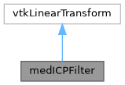

|
MUSICardio 4.2
MUSICardio application created by Inria Epione, IHU LIRYC and Université de Bordeaux
|
Loading...
Searching...
No Matches
|
MUSICardio 4.2
MUSICardio application created by Inria Epione, IHU LIRYC and Université de Bordeaux
|


Public Member Functions | |
| void | PrintSelf (ostream &os, vtkIndent indent) override |
| void | SetSource (vtkDataSet *source) |
| void | SetTarget (vtkDataSet *target) |
| vtkGetObjectMacro (Source, vtkDataSet) | |
| vtkGetObjectMacro (Target, vtkDataSet) | |
| void | SetLocator (vtkCellLocator *locator) |
| vtkGetObjectMacro (Locator, vtkCellLocator) | |
| vtkSetMacro (ScaleFactor, double) | |
| vtkGetMacro (ScaleFactor, double) | |
| vtkSetMacro (MaximumNumberOfIterations, int) | |
| vtkGetMacro (MaximumNumberOfIterations, int) | |
| vtkGetMacro (NumberOfIterations, int) | |
| vtkSetMacro (CheckMeanDistance, int) | |
| vtkGetMacro (CheckMeanDistance, int) | |
| vtkBooleanMacro (CheckMeanDistance, int) | |
| vtkSetClampMacro (MeanDistanceMode, int, VTK_ICP_MODE_RMS, VTK_ICP_MODE_AV) | |
| vtkGetMacro (MeanDistanceMode, int) | |
| void | SetMeanDistanceModeToRMS () |
| void | SetMeanDistanceModeToAbsoluteValue () |
| const char * | GetMeanDistanceModeAsString () |
| vtkSetMacro (MaximumMeanDistance, double) | |
| vtkGetMacro (MaximumMeanDistance, double) | |
| vtkGetMacro (MeanDistance, double) | |
| vtkSetMacro (MaximumNumberOfLandmarks, int) | |
| vtkGetMacro (MaximumNumberOfLandmarks, int) | |
| vtkSetMacro (StartByMatchingCentroids, int) | |
| vtkGetMacro (StartByMatchingCentroids, int) | |
| vtkBooleanMacro (StartByMatchingCentroids, int) | |
| vtkGetObjectMacro (LandmarkTransform, vtkLandmarkTransform) | |
| void | Inverse () override |
| vtkAbstractTransform * | MakeTransform () override |
| std::vector< vtkIdType > | GetSourceLandmarkIds () |
| void | GetFREStats (double &mean, double &variance, double &median) |
Static Public Member Functions | |
| static medICPFilter * | New () |
Protected Member Functions | |
| void | ReleaseSource (void) |
| void | ReleaseTarget (void) |
| void | ReleaseLocator (void) |
| void | CreateDefaultLocator (void) |
| vtkMTimeType | GetMTime () override |
| void | InternalUpdate () override |
| void | InternalDeepCopy (vtkAbstractTransform *transform) override |
|
protected |
Create default locator. Used to create one when none is specified.
|
overrideprotected |
Get the MTime of this object also considering the locator.
|
overrideprotected |
This method does no type checking, use DeepCopy instead.
|
override |
Invert the transformation. This is done by switching the source and target.
|
override |
Make another transform of the same type.
|
protected |
Release locator
|
protected |
Release source and target
| void medICPFilter::SetLocator | ( | vtkCellLocator * | locator | ) |
Set/Get a spatial locator for speeding up the search process. An instance of vtkCellLocator is used by default.
| void medICPFilter::SetSource | ( | vtkDataSet * | source | ) |
Specify the source and target data sets.
| medICPFilter::vtkGetMacro | ( | MeanDistance | , |
| double | |||
| ) |
Get the mean distance between the last two iterations.
| medICPFilter::vtkGetMacro | ( | NumberOfIterations | , |
| int | |||
| ) |
Get the number of iterations since the last update
| medICPFilter::vtkGetObjectMacro | ( | LandmarkTransform | , |
| vtkLandmarkTransform | |||
| ) |
Get the internal landmark transform. Use it to constrain the number of degrees of freedom of the solution (i.e. rigid body, similarity, etc.).
| medICPFilter::vtkSetClampMacro | ( | MeanDistanceMode | , |
| int | , | ||
| VTK_ICP_MODE_RMS | , | ||
| VTK_ICP_MODE_AV | |||
| ) |
Specify the mean distance mode. This mode expresses how the mean distance is computed. The RMS mode is the square root of the average of the sum of squares of the closest point distances. The Absolute Value mode is the mean of the sum of absolute values of the closest point distances. The default is VTK_ICP_MODE_RMS
| medICPFilter::vtkSetMacro | ( | CheckMeanDistance | , |
| int | |||
| ) |
Force the algorithm to check the mean distance between two iterations. Default is Off.
| medICPFilter::vtkSetMacro | ( | MaximumMeanDistance | , |
| double | |||
| ) |
Set/Get the maximum mean distance between two iteration. If the mean distance is lower than this, the convergence stops. The default is 0.01.
| medICPFilter::vtkSetMacro | ( | MaximumNumberOfIterations | , |
| int | |||
| ) |
Set/Get the maximum number of iterations. Default is 50.
| medICPFilter::vtkSetMacro | ( | MaximumNumberOfLandmarks | , |
| int | |||
| ) |
Set/Get the maximum number of landmarks sampled in your dataset. If your dataset is dense, then you will typically not need all the points to compute the ICP transform. The default is 200.
| medICPFilter::vtkSetMacro | ( | ScaleFactor | , |
| double | |||
| ) |
Set/Get the scale factor
| medICPFilter::vtkSetMacro | ( | StartByMatchingCentroids | , |
| int | |||
| ) |
Starts the process by translating source centroid to target centroid. The default is Off.